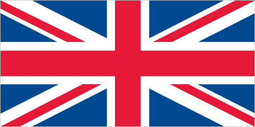

Europe :: DHEKELIA
Introduction :: DHEKELIA
-
By terms of the 1960 Treaty of Establishment that created the independent Republic of Cyprus, the UK retained full sovereignty and jurisdiction over two areas of almost 254 square kilometers - Akrotiri and Dhekelia. The larger of these is the Dhekelia Sovereign Base Area, which is also referred to as the Eastern Sovereign Base Area.
Geography :: DHEKELIA
-
Eastern Mediterranean, on the southeast coast of Cyprus near Famagusta34 59 N, 33 45 EMiddle Easttotal: 130.8 sq kmnote: area surrounds three Cypriot enclavescountry comparison to the world: 223about three-quarters the size of Washington, DCtotal: 108 kmborder countries (1): Cyprus 108 km27.5 kmtemperate; Mediterranean with hot, dry summers and cool wintersnetting and trapping of small migrant songbirds in the spring and autumnBritish extraterritorial rights also extended to several small off-post sites scattered across Cyprus; of the Sovereign Base Area (SBA) land, 60% is privately owned and farmed, 20% is owned by the Ministry of Defense, and 20% is SBA Crown land
People and Society :: DHEKELIA
-
approximately 15,700 live on the Sovereign Base Areas of Akrotiri and Dhekelia including 7,700 Cypriots, 3,600 service and UK based contract personnel, and 4,400 dependentsEnglish, Greek
Government :: DHEKELIA
-
conventional long form: noneconventional short form: Dhekeliaa special form of UK overseas territory; administered by an administrator who is also the Commander, British Forces Cyprusname: Episkopi Cantonment (base administrative center for Akrotiri and Dhekelia); located in Akrotirigeographic coordinates: 34 40 N, 32 51 Etime difference: UTC+2 (7 hours ahead of Washington, DC, during Standard Time)daylight saving time: +1hr, begins last Sunday in March; ends last Sunday in Octoberpresented 3 August 1960, effective 16 August 1960 (The Sovereign Base Areas of Akrotiri and Dhekelia Order in Council 1960, serves as a basic legal document); amended 1966 (2016)laws applicable to the Cypriot population are, as far as possible, the same as the laws of the Republic of Cyprus; note - the Sovereign Base Area Administration has its own court system to deal with civil and criminal matterschief of state: Queen ELIZABETH II (since 6 February 1952)head of government: Administrator Air Vice-Marshall Michael WIGSTON (since 21 January 2015); note - reports to the British Ministry of Defenseelections/appointments: the monarchy is hereditary; administrator appointed by the monarch on the advice of the Ministry of Defensehighest court(s): Senior Judges' Court (consists of several visiting judges from England and Wales)judge selection and term of office: see entry for United Kingdomsubordinate courts: Resident Judges' Court; military courtsnone (overseas territory of the UK)none (overseas territory of the UK)the flag of the UK is usednote: as a United Kingdom area of special sovereignty, "God Save the Queen" is official (see United Kingdom)
Economy :: DHEKELIA
-
Economic activity is limited to providing services to the military and their families located in Dhekelia. All food and manufactured goods must be imported.nonenote: uses the euro
Communications :: DHEKELIA
-
British Forces Broadcast Service (BFBS) provides multi-channel satellite TV service as well as BFBS radio broadcasts to the Dhekelia Sovereign Base (2009)
Military and Security :: DHEKELIA
-
defense is the responsibility of the UK; includes Dhekelia Garrison and Ayios Nikolaos Station connected by a roadway